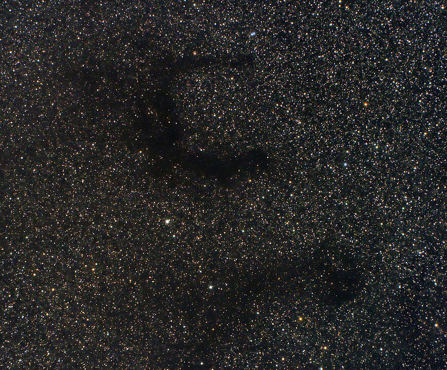

KTG 71, A Trio of Dolphins
KTG 71 (Karachentsev Triple Galaxies) = LGG 440 (Lyon Group of Galaxies)
NGC 6956, UGC 11620 and UGC 11623
Mean RA: 20 44 10, Dec: +12 27 54
Size: 1.9'x1.9', 0.6'x0.4', and 1.0'x0.7'
Mag: 12.3V, 13.8V and 13.9V
Types: NGC 6956 (SBb), UGC 11620 (S), UGC 11623 (SBa)
This trio swims in the constellation of Delphinus at a distance of ~200 million l.y. You'll find these spirals swimming about 3° northeast of Epsilon, the 4th magnitude star forming the tail of the Dolphin.
NGC 6956 was discovered by William Herschel during his 299th sweep on 19 Oct 1784 and logged as "extremely faint; very small; stellar; just preceding a small star, 240x verified it with difficulty." His son John observed the galaxy on 29 July 1829 and reported "vF; S; 15"; precedes and is attached to the double star No. 1566 of my 4th catalogue." NGC 6956 is somewhat of a supernova factory, producing supernovae in 2006, 2013 and 2015. The Herschel's missed the two UGCs, which form a near equilateral triangle with sides 6', 7' and 8'.
Here's the HST image of NGC 6956

My first observation of the barred spiral NGC 6956 was 35 years ago (July 1982) using a C-8 and I simply called it "faint, small. A mag 10 star at the east edge interferes." Since then I've made several observations of the trio using 13.1-inch and larger scopes. Here's a more recent one using my 24-inch , which revealed spiral structure in NGC 6956--
NGC 6956 = KTG 7A, at the NW vertex, appeared moderately bright, elongated ~3:2 NW-SE, 60"x40". The view is somewhat hampered by a mag 11 star that is superimposed on the east edge and a mag 14.5 star is ~20" E of the bright star. The galaxy appears to be a barred spiral with a brighter bar oriented ~N-S extending down the middle of the glow. A brighter nucleus in the center of the bar is quasi-stellar (~5") and similar to the mag 14.5 star in brightness. A faint extension (spiral arm) curves east from the south end of the bar, extending south of the mag 11 star.
UGC 11620 = KTG 71B is the second brightest member and appeared fairly faint, small, elongated 3:2 SSW-NNE, 21"x14". Two mag 13/14 stars are off the SE end and a mag 15.5 star is near the NNE end [22" from center]. Finally, UGC 11623 = KTG 71C, at the eastern vertex of the triangle, appeared fairly faint, fairly small, elongated 5:3 SW-NE, 36"x20", a small brighter core is embedded in a fairly smooth halo. A small trio of mag 13/14.5.15 stars is close preceding and a mag 10 star 5' S forms the vertex of an isosceles right triangle with UGC 11623 and 11620.
While you're in the area, check out STF 2723, a double star challenge just 12' SE of UGC 11620 or 19' SE of NGC 6956. It consists of a pair of mag 7.0 and 8.3 stars at 1.2" separation. I've resolved it a few times with my 18" and would recommend at least 250x.
Speaking of double stars, I'm a bit confused about John Herschel's HJ 1566. He stated NGC 6956 "precedes and is attached to the double star No. 1566 of my 4th catalogue". And my notes mention two stars close east of NGC 6956 -- an 11th mag star and a 14th mag star about 20" to its east. So, I assumed these were HJ 1566. But the Washington Double Star Catalogue (WDS) identifies HJ 1566 as a pair close southeast of UGC 11620! Seems to me that the WDS is incorrect, but I haven't checked Herschel's double star catalogue. If WDS is correct, that suggests John Herschel also discovered UGC 11620. Any double star mavens here who can sort this out?
"Give it a go and let us know!"
Note: I'm posting this OOTW a couple of days early as I'm heading to Oregon this weekend in preparation for the total solar eclipse. Good luck to all who plan to view it on the 21st!